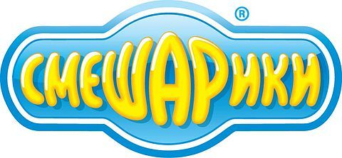

Добро пожаловать!
«Смешарики» — популярный российский анимационный сериал, созданный для детей и взрослых. Он сочетает юмор, философию и образовательные элементы. Премьера состоялась в 2004 году, и с тех пор мультфильм завоевал любовь зрителей в России и за её пределами.
Каждый персонаж обладает уникальным характером и отражает разные типы личности, что делает мультфильм интересным для широкой аудитории. Сериал переведён на десятки языков и транслируется в более чем 60 странах мира.
История создания
Идея проекта принадлежит Анатолию Прохорову, Илье Попову и Салавату Шайхинурову. Название «Смешарики» образовано от слов «смешные шарики» — намёк на круглую форму персонажей. Первые серии создавались с использованием 3D-графики, что было новаторством для российской анимации.
Награды и достижения
- Государственная премия РФ в области культуры (2009)
- Гран-при Международного фестиваля детского анимационного кино «Золотая рыбка»
- Премия «Мультимир» в номинации «Лучший российский анимационный сериал»
Адаптации
Помимо основного сериала, существуют образовательный проект «Смешарики. Пин-код», полнометражные фильмы («Смешарики. Начало», «Смешарики. Легенда о золотом драконе») и многочисленные книги, игры и сувенирная продукция.
